Digital Humanities · Jesus and Mary College · English Department
A Digital Humanities Analysis of Colour and Language on Femina's Magazine Covers
1959–2024
Overview
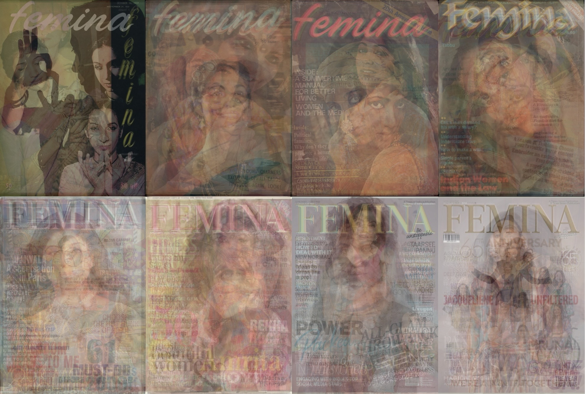
Composite Overlay · All Covers · 1959–2024
This project analyses over 220 cover pages of Femina magazine between 1959–2024 to trace how the magazine visually and textually constructed and reconstructed the "new" Indian womanhood across six decades of socio-cultural change.
Using two digital humanities methods, computational text analysis (Voyant Tools) and dominant-colour extraction (ImageColorPicker.com), the study builds a dual dataset visualised through a custom HTML interface. Theoretically, the project draws on feminist visual culture studies and work on Indian women's magazines to read covers as sites where national identity, consumer culture, and gendered embodiment intersect.
The findings show a shift from warm ochres and muted earth tones in the 1950s–70s, through the bold pop aesthetics of the 1980s and the high-contrast reds and blues of the liberalisation era, to the saturated, globally inflected palettes of the 2010s–2020s. Decade-specific distinctive words reveal a parallel shift from domestically oriented, beauty-family frames to vocabularies of career, self-fashioning, and global lifestyle, while still centring narrow, upper-class femininities.
Visual Method
The composite overlay presented above was created in Adobe Fresco by layering all covers used in the analysis within each decade at increased transparency, then arranged into a single collage to identify visual patterns across time.
The earlier layers are darker, more varied in tone, and show dance forms, facial expressions, and body language that are closer to the viewer, more expressive, and more diverse in their orientations. The later composites are lighter, more centrally composed, and more uniform with faces consistently forward-facing, compositions more symmetrical, the overall effect more curated, more "produced."
This visual shift from expressive diversity to curated uniformity parallels the textual shift from varied, experimental cover language to the more formulaic vocabulary of the post-liberalisation era.
Approach
This project uses a mixed-methods digital humanities design that combines quantitative text analysis, quantitative-visual colour analysis, and qualitative feminist interpretation.
Text Analysis
All cover text (headlines, taglines, subheadings) was manually transcribed into seven decade-documents and uploaded as .TXT files into Voyant Tools, generating word clouds, full-corpus frequency rankings, trend graphs, and distinctive word analyses per decade. Taglines were treated as a separate analytical category to avoid distorting the editorial vocabulary.
Colour Extraction
Each of the 193 cover images was uploaded to ImageColorPicker.com, from which 9–11 dominant hex codes were extracted per cover, focusing on backgrounds, garments, and major typographic blocks. Decade-level palettes of 10 colours each were then curated from the most recurrent shades across all covers within each decade.
The text-colour pairing was a deliberate methodological choice as a magazine cover communicates simultaneously through language and image, and to analyse only one would be incomplete. The dataset spans approximately 220+ covers; early decades are underrepresented because fewer covers have been preserved in accessible digital form, with the 2010s yielding the densest coverage.
Brand Identity Over Time
Femina's tagline, apart from being the brand's identity, is also the magazine's statement about the identity of its reader. The shift from flair to substance to generation to unstoppable documents the magazine's evolving construction of what Indian womanhood should aspire to be.
That unstoppable appears on every cover in the 2010s and 2020s as a permanent feature of the cover surface can be read as a form of ideological saturation. The reader is told, issue after issue, that they are unstoppable, whether reading about fashion, love, or recipes.
1950s – 60s
Flair
Grace, refinement, and cultivated social presentation. A womanhood rooted in cultural poise within an Anglophone framework.
1990s
Substance
Depth and seriousness, a counterpoint to the glamour economy of post-liberalisation India, even as celebrity and designer vocabulary entered simultaneously.
2000s
Generation
Collective progress, a generation of women building, achieving, and arriving. The cover begins to function as a celebrity platform.
2010s – 2020s
Unstoppable
Individual empowerment as brand. Recurring on every cover, this tagline represents the commodification of feminist vocabulary where empowerment is a product to be purchased and a self to be performed.
Voyant Tools · Word Frequency Analysis
Even though the following word clouds are generated from the cover text with the taglines, the analysis here treats them separately, as taglines inflate the frequency counts. Each cloud represents the statistically distinctive words of that decade relative to the full corpus.
Decade
1950s & 60s
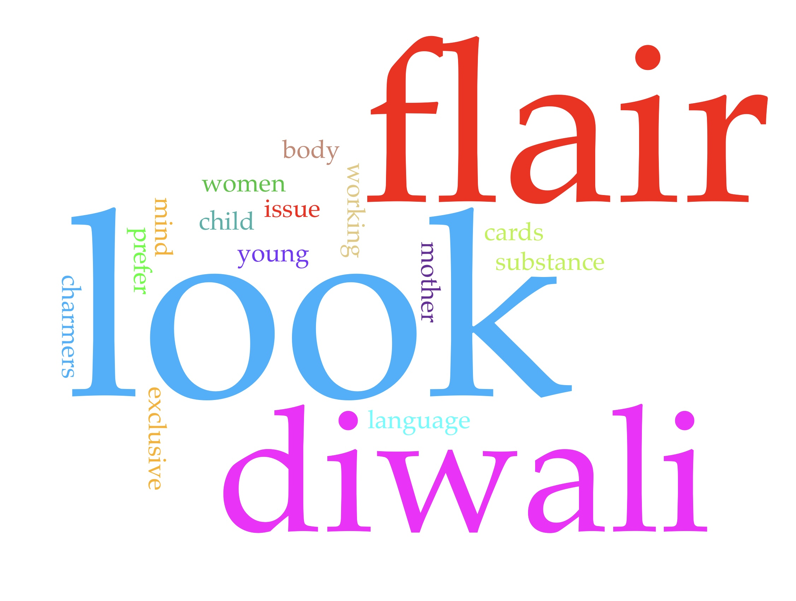
The earliest covers are dominated by look, diwali, charmers, body, child, and mother. Flair and charmers evoke a cultivated womanhood concerned with grace and social presentation. Diwali signals Femina's early integration of Indian cultural identity within an Anglophone framework, while the prominence of child and mother reflects the domestic orientation of the period. The vocabulary density is high (0.704), meaning cover language is varied despite the small corpus.
Decade
1970s
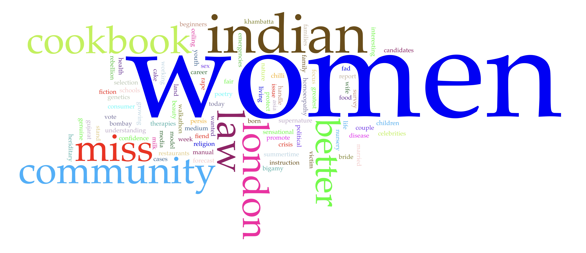
Women is by far the dominant term, followed by indian, cookbook, miss, community, law, london, and terms related to national life: vote, religion, national, crisis, candidates, fiction. This is the only decade in which Femina consistently positioned women as political citizens. Covers included images of Indira Gandhi; the Emergency (1975–77) and the Indian women's movement both also register in the vocabulary. The word law appears in no other decade. Yet cookbook persists alongside community and law, making sure domesticity and civic life coexist.
Decade
1980s
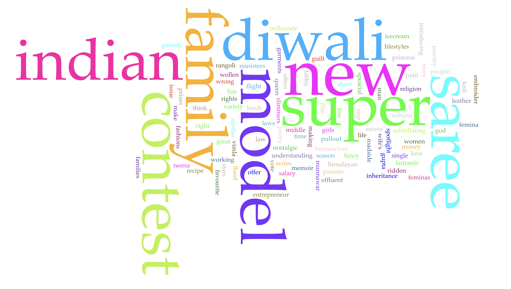
The word cloud is dominated by indian, family, diwali, new, super, model, saree, and contest. The appearance of model, super, and contest is new as this is the decade in which Femina's Miss India contest gains significant prominence, and the vocabulary of competitive femininity enters the cover language. Yet indian, family, diwali, and saree persist, signalling the co-existence of global aspiration with continued cultural anchoring. The 1980s have the highest vocabulary density (0.927) and readability index (13.858) of any decade.
Decade
1990s
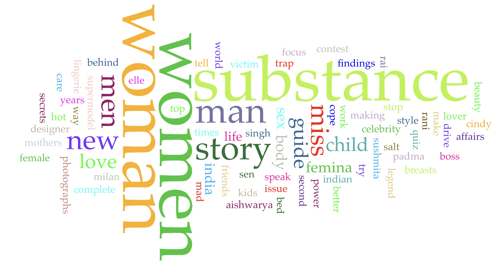
The dominant terms are woman, women, men, story, miss, new, love, guide, and in the second half of the decade, supermodel, celebrity, designer, aishwarya. The economic liberalisation of 1991 opened Indian markets to global brands and aesthetics. Femina navigates this by using the language of 'substance' and Indian womanhood alongside celebrity, designer goods, and global aspiration, defining tensions of the decade.
Decade
2000s
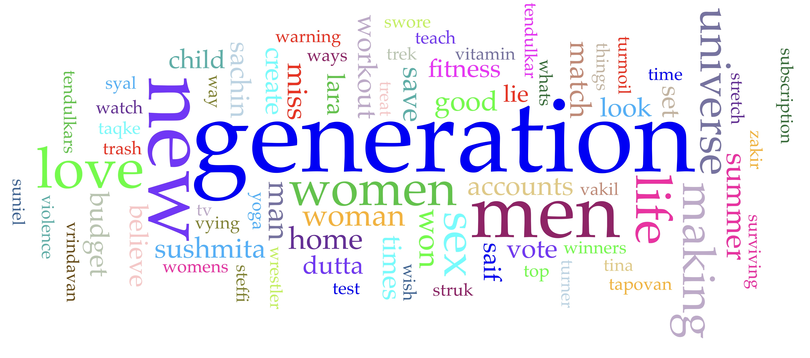
This word cloud is dominated by generation, new, love, women, and life, with celebrity names such as saif, sachin, sushmita, lara, dutta, visible for the first time. Celebrity culture is now fully established. Generation and making suggest a discourse of collective progress. The 2000s also begin a trend of increasing engagement with female sexuality and civic life that peaks in the following decade. Universe reflects the continued centrality of beauty pageants to Femina's identity.
Decade
2010s
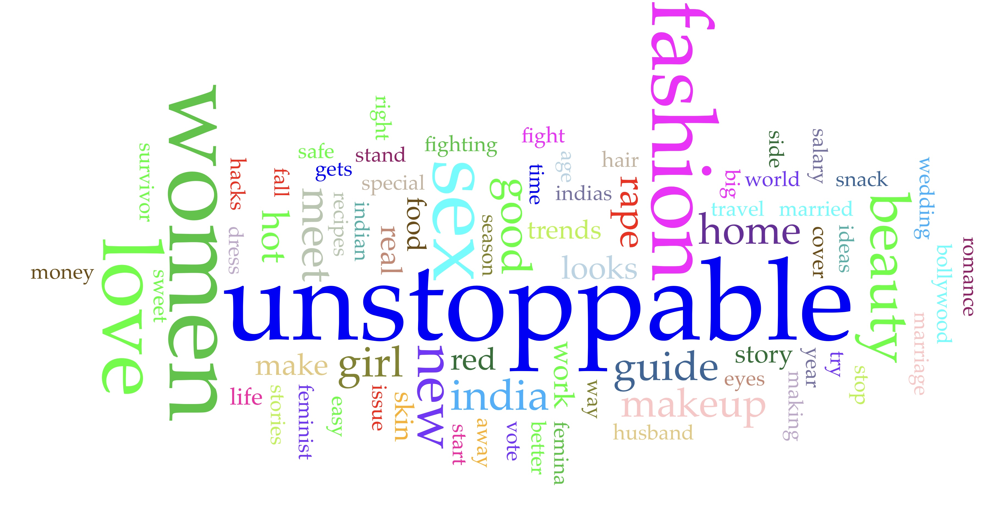
With the tagline removed, dominant terms are women, fashion, sex, beauty, love, india, guide, makeup, skin, home, story, rape, work, and looks. The presence of rape is visible without magnification and is one of the most significant textual findings. Concordance analysis reveals that marital and delhi gang appear to its left, while survivor, myths, and hotline appear to its right, indicating a language of support and advocacy. Section377 and queer also appear, tracking the campaign to decriminalise homosexuality culminating in the 2018 Supreme Court ruling.
Decade
2020s
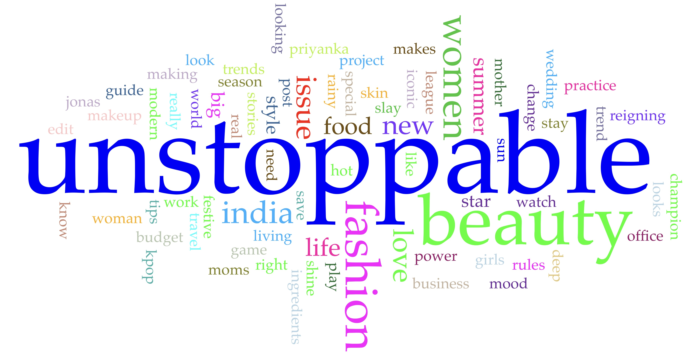
Dominated by women, fashion, beauty, love, india, skin, guide, home, story, looks, makeup. The return of home as a visible term likely reflects the pandemic period. Significantly, the political vocabulary of the 2010s, rape, section377, queer, recedes sharply, suggesting that Femina's engagement with rights-based language was more a function of brand identity than a lasting editorial commitment.
Voyant Tools · Longitudinal Trends
The following trend graphs track the frequency of key terms across the seven decade-documents, making visible patterns that close reading of individual covers cannot reveal. The asterisk (*) operator captures word families, for example, child* captures child, children, childbirth.
Tagline Evolution · flair / substance / generation / unstoppable
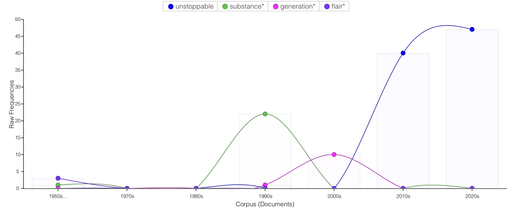
The graph tracks flair in the 1950s–60s, substance* peaking in the 1990s, generation* prominent in the 2000s, and unstoppable dominating from the 2010s onward and reaching its highest frequency in the 2020s. The progression from grace to depth to collective progress to individual empowerment-as-brand, documents the magazine's evolving construction of aspirational Indian womanhood.
Work versus Marriage · work* / career* / marriage* / wedding*
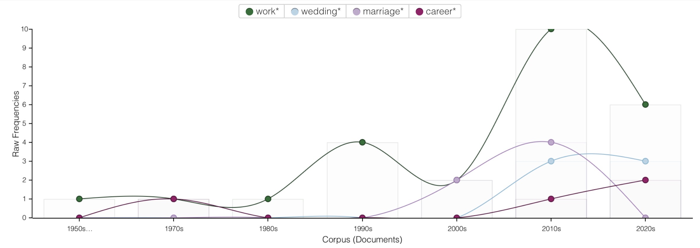
Work* shows a clear upward trajectory from the 1990s, peaking in the 2010s (9 occurrences). Career* follows a similar but lower arc from the 2000s. Crucially, marriage* and wedding* peak simultaneously in the 2010s, suggesting that work and marriage are not positioned as opposites in Femina's vocabulary, but coexist as simultaneous aspirations for the same reader. The "double burden" of postfeminist theory is here made quantitatively legible.
Domestic Role Terms · mother* / wife* / mom* / housewives*
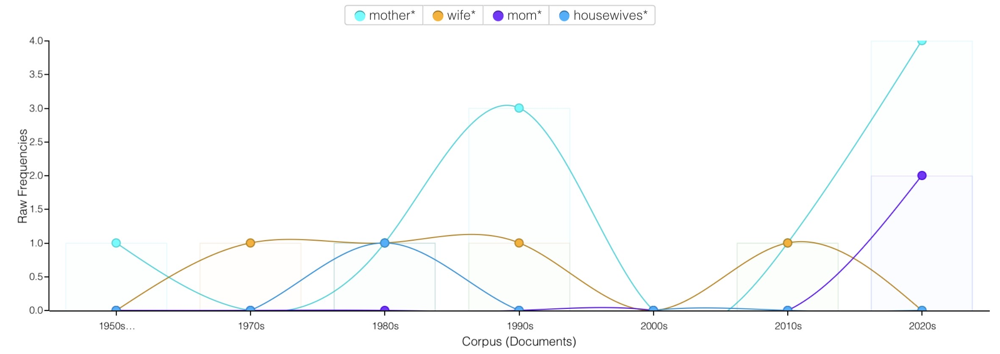
Mother* peaks in the 1990s then rises again in the 2020s. Mom* is essentially absent until the 2010s, then rises sharply. Housewives* is nearly absent across the entire corpus. This pattern suggests that the language of maternal identity has been modernised. mom* replaces housewife, maintaining the maternal role while removing its domestic-confinement connotations.
Rights & Violence · rape* / survivor* / section377* / queer*
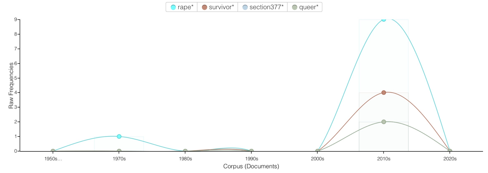
All four terms peak in the 2010s and decline into the 2020s. Rape* reaches its highest frequency (9 occurrences), with concordance analysis showing marital and delhi gang to its left and survivor, myths, hotline to its right, a language of advocacy and information-seeking. Section377* (2 occurrences) and queer* (2 occurrences) track the legal campaign to decriminalise homosexuality, culminating in the 2018 Supreme Court ruling. The subsequent decline in the 2020s raises questions about editorial commitment versus brand strategy.
Sex & Desire · sex* / married* / libido* / desire*
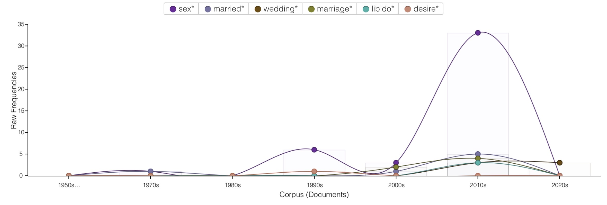
Sex* dominates this graph overwhelmingly, reaching 32 occurrences in the 2010s, by far the highest frequency of any single tracked term. Libido* and desire* appear for the first time in this decade. What is notable is that sex is discussed as a standalone category of female autonomy, not exclusively associated with marriage or sanctioned relationships, a significant shift from earlier decades.
ImageColorPicker.com · 193 Covers
Between 9 and 11 dominant hex codes were extracted per cover. The decade-level palettes below represent the 10 most recurrent shades across all covers within each decade. The chromatic shift from the earthy, analogue palettes of the 1950s–70s to the saturated teal-lime-yellow-purple palettes of the 2010s–2020s tracks Femina's visual globalisation, making Indian femininity globally legible in a transnational fashion aesthetic.
Reading the Archive
The persistence of beauty, fashion, love, and skin across all seven decades shows that, regardless of the political context (the Emergency, liberalisation, Nirbhaya, Section 377, the pandemic), Femina consistently positions Indian womanhood in the female body as the primary site of self-investment and social value. Following McRobbie and Gill, this is an instance of postfeminist sensibility where women are interpellated as empowered consumers whose bodies must be continually improved, displayed, and managed.
The 1970s form a significant exception. The appearance of law, vote, candidates, and community marks the only decade in which Femina consistently positioned women as political citizens. The disappearance of this political vocabulary in the following decade indicates how quickly the possibilities opened by the Emergency and the women's movement were absorbed back into consumerist visual culture.
The work-versus-marriage trend graph visualises the "double burden" critiqued by postfeminist theory as in the 2010s, work* and career* rise alongside marriage*, wedding*, and husband*. The "new Indian woman" is not positioned as having to choose, she is expected to have and excel at both. This fully supports Menon's argument that career becomes another axis along which womanhood is commodified, without dismantling the expectation of heterosexual marriage.
Colour analysis extends this frame into visual semiotics. The chromatic shift from earthy, analogue palettes to saturated, globally legible chromatic shades tracks Femina's visual globalisation, a shift that documents how Indian femininity is staged for transnational circulation. Whether this represents cultural confidence or homogenisation under consumer capitalism remains an open question, but one that digital methods now make it possible to pose empirically.
Key Finding
The 1970s Exception
The only decade in which Femina addressed women as political citizens, not merely consumers. Law, vote, candidates, and Indira Gandhi's image appear on covers but never repeated in any other period.
Key Finding
Tagline as Ideology
Unstoppable saturates every cover from 2010 onward, demonstrating how feminist vocabulary becomes brand identity, detached from structural critique.
Key Finding
Colour shifts for Globalisation
The shift from warm ochres and earth tones (1950s–70s) to high-contrast teal, lime, and purple (2010s–20s) tracks Indian femininity being styled for transnational legibility.
Key Finding
The Double Burden
Work and marriage peak simultaneously in the 2010s. Femina's "empowered" woman is not freed from domesticity, she is expected to excel at both labour and family simultaneously.
A note on limitations: Femina is an English-language magazine priced for and directed at urban, upper-/upper-middle-class women. The "Indian womanhood" on its covers is therefore a classed fraction of India's female population. Rural women, working-class women, Dalit women, and women for whom the beauty economy is economically inaccessible are neither implied readers nor visible subjects. The data analyses a construction of Indian womanhood, not Indian womanhood as a whole. Additionally, the corpus is incomplete for early decades (4 covers for the 1950s; 1 for the 1960s), making statistical claims for those periods indicative rather than conclusive.